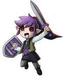
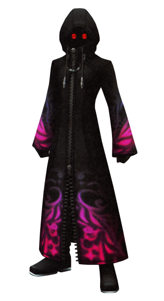
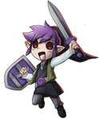
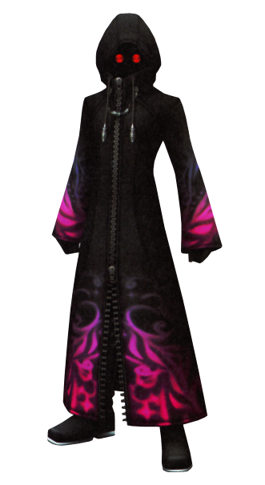

Hello Sam,this is your boss!,Because you wanted a promotion..
I decided to put you through a task..It's an easy one..
And coz ur my favourite(for sure)
I'll tell you some clues..
1)The game has levels..level1 is plain
2)Our office cubicles are converted to a maze..find all coins within 15 seconds in each level
3)You have a bomb with you that can be used once in a level to take off all the four cubicles around you
..press B to get it..Don't worry you won't be harmed by it
4)If you can't find all the coins in a level..you fail :D..But,you can restart the level
5)There is no going back if you complete the level
6)If you get killed..Oh don't look shocked..happens,you know..you can restart the whole process
7)And yeah,you can restart the entire task anytime
8)This night will continue forever for you,until you unlock all the 10 levels and collect all the coins
9)There are amazing people out there in the maze..they might kill you though ;)
10)I hope I'll see you in the morning!..Good Luck!
Press 'P' to play
You think your boss is joking..it sounds like a lunatic blabber,but,are you gonna press P?
If you are,read the instructions once more..coz he isn't joking!
 


